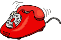

Проблемы
 Реклама
Реклама
 Кракозябры
Кракозябры
Компьютер хранит буквы числами. Для латиницы числа договорились одинаковые, а для русских букв в 90-е было сразу несколько таблиц, или кодировок: KOI8-R пришла из Unix, Windows-1251 из Windows, CP866 из DOS, а у Макинтоша была своя.
Сайт написан в одной кодировке, а браузер читает в другой, и вместо букв выходят кракозябры. Поэтому на русских сайтах сверху висели ссылки WIN, KOI, DOS, MAC: выбери ту, в которой у тебя читается.
Письма приходили нечитаемыми так часто, что были программы-перекодировщики. Сегодня почти весь интернет в UTF-8, где есть буквы всех языков сразу, и проблема почти исчезла.

«Положи трубку, я в интернете!»
trailer_matrix.avi · 12,4 МБ · с сервера ftp.kino.ru
0,0 из 12,4 МБПрошло 0 мин4,9 КБ/с
Нажми «Начать»: 40 минут загрузки пролетят за несколько секунд.
 «Лучше смотреть в Internet Explorer»
«Лучше смотреть в Internet Explorer»
Мой сайт - Microsoft Internet Explorer
НОВОЕ!!!
У нас живут три кошки: Мурзик, Пушинка и Барсик. Тут их фото и истории.
Ваш браузер не поддерживается. Скачайте Internet Explorer 5.5 или выше.